12. Tiesinė regresija
Užsiėmimo tikslas – praktiškai susipažinti su išsamios tiesinės regresinės analizės principais.
Pratybų metu reikalingi R paketai:
library(tidyverse)
library(biostat)
library(data.table)
library(Rcmdr)
library(RcmdrMisc)
library(car)
library(Hmisc)
library(lmtest)
# Kalibracijos uždavniui
library(chemCal)12.1 Regresinė analizė
Koreliacinė analizė parodo, ar dviejų kintamųjų reikšmės yra susijusios ir koks tos sąsajos stiprumas. Jei šito užtenka, šioje vietoje analizę ir baigiame. Jei norime griežčiau apsirašyti šią sąsają, galime atliki regresinę analizę.
Regresijos modelis – statistinis modelis, leidžiantis vieno kintamojo reikšmes prognozuoti pagal kito kintamojo reikšmes. Regresija — statistinė vieno atsitiktinio dydžio reikšmių priklausomybė nuo kito – neatsitiktinio – dydžio (arba kelių kitų dydžių), turinti griežtą funkcinį ryšį (t. y., aprašoma lygtimi). Pavyzdžiai:
- pirmas pavyzdys, kuris ateina į galvą – yra kalibravimas, kai paruošiame žinomos koncentracijos tirpalus, supilstome į kiuvetes bei išmatuojame šviesos sugertį. Susidarome koncentracijos ir šviesos sugerties priklausomybės (t. y., kalibracinę) kreivę bei lygtį. Vėliau į mėgintuvėlį įpylę nežinomos koncentracijos tirpalą pagal šviesos sugerties intensyvumą galime nustatyti koncentraciją. Tai dažnas uždavinys per biochemijos laboratorinius darbus;
- regresija gali būti naudojama ir tada, kai, tarkime, norime nustatyti, koks įprastai būna pulsas padarius tam tikrą kiekį pritūpimų;
- koks būna vabzdžio šarvo storis, jei žinome vabzdžio svorį ir ilgį;
- kaip svoris priklauso nuo amžiaus;
- kaip plaučių tūris priklauso nuo per savaitę surūkomų cigarečių skaičiaus.
Paprastosios tiesinės regresijos modelis užrašomas lygtimi: \[Y = a + bX + \varepsilon\] Čia:
- \(Y\) ir \(X\) – mūsų tiriami kintamieji:
- \(Y\) – vadinamas priklausomu, arba atsako, kintamuoju, nes jį modeliuojame;
- \(X\) – nepriklausomu, arba aiškinamuoju, kintamuoju, arba regresoriumi, nes pagal jį modeliuojame \(Y\) reikšmes. Daroma prielaida, kad \(X\) yra matuojamas be paklaidų (t. y., nėra atsitiktinis dydis);
- \(a\) ir \(b\) – lygties koeficientai:
- \(a\) – laisvasis narys, kartais vadinamas konstanta (angl., intercept). Paprastosios regresijos atveju parodo, kurioje vietoje regresijos tiesė kerta y ašį, kai \(X = 0\);
- \(b\) – koeficientai, dar vadinami krypties koeficientais (angl., slope) arba svertiniais koeficientais. Parodo, kiek pakinta Y reikšmė, kai X reikšmė pakinta vienu vienetu.
- Atliekant regresinę analizę mūsų tikslas apskaičiuoti šiuos koeficientus.
- \(\varepsilon\) liekamosios paklaidos, dar vadinamos likučiais (angl., residuals):
- tai visa kita, nuo ko gali priklausyti Y reikšmės;
- šios paklaidos – tai kintamojo \(Y\) matavimo paklaidos (nes modelyje laikoma, kad \(X\) matuojamas be paklaidų);
- pagal paklaidas galime patikrinti daugelį tiesinės regresijos modelio prielaidų.
Daugialypės tiesinės regresijos modelis panašus, tik yra daugiau nepriklausomų kintamųjų ir \(b\) koeficientų:
\[Y = a + b_1X_1 + b_2X_2 + b_3X_3 + \varepsilon\]
12.1.1 Regresinės analizės eiga
Visą regresinę analizę galima suskirstyti į 3 pagrindinius etapus:
- Pirmiausia modelis yra sudaromas (parenkami kintamieji, užrašoma regresijos lygtis, apskaičiuojami koeficientai).
- Tada vykdoma modelio diagnostika (patikrinamas modelio tinkamumas duomenims, duomenų tinkamumas modeliui, modelio prielaidos):
- jei reikia – modelis tobulinamas.
- Galiausiai tinkamai sudarytas modelis aprašomas ir naudojamas prognozuoti:
- ateityje žinodami visų X’ų reikšmes, galėsime prognozuoti, kokia, tikėtina, bus kintamojo Y reikšmė.
12.1.2 Tinkamo tiesinės regresijos modelio rodikliai
Tinkamo tiesinės regresijos modelio, pagal kurį galima daryti pagrįstas išvadas, rodikliai (labai išsami regresinė analizė):
- Determinacijos koeficientas \(R^2 \ge 0,20\):
- kuo \(R^2\) didesnis, tuo glaudžiau taškai išsidėsto apie regresijos tiesę;
- naudojame tik vieną determinacijos koeficientą, kuris labiau tinka:
- arba įprastinį: tinka paprastajai tiesinei regresijai arba daugialypei, kai duomenų pakankamai daug – pvz., vienam nepriklausomam kintamajam \(X_i\) tenka bent 7 duomenų taškai;
- arba koreguotąjį: kai modelyje yra daug nepriklausomų kintamųjų \(X_i\) (ir palyginus mažai taškų), įprastinis \(R^2\) gali būti nepagrįstai didelis.
- ANOVA \(p < 0,05\):
- parodo, kad bent vienas regresorius yra reikalingas, t. y., bent vieno koeficiento vertė statistiškai reikšmingai skiriasi nuo nulio;
- Visiems regresoriams t kriterijų \(p < 0,05\):
- parodo, kurių konkrečiai koeficientų vertė statistiškai reikšmingai skiriasi nuo 0;
- Nėra išskirčių, jei:
- Bonferroni išskirčių kriterijaus koreguotoji \(p \ge 0,05\) (arba NA);
- Kuko matas d (Cook‘s distance) visiems stebėjimams \(d < 1\).
- Liekamosios paklaidos normalios:
- Sprendžiant pagal q-q grafiką bei
- Shapiro-Wilk testo \(p \ge 0,05\).
- Liekamųjų paklaidų vidurkis lygus 0:
- Sprendžiant iš liekamųjų paklaidų pagal prognozuojamas reikšmes grafiko bei
- Vienos imties t testo \(p \ge 0,05\).
- Nėra heteroskedastiškumo problemos:
- Sprendžiant iš liekamųjų paklaidų grafikų bei
- Breusch-Pagan (Breušo-pagano) testo \(p \ge 0,05\).
- Nėra multikolinearumo problemos, dėl kurios neteisingai apskaičiuojami lygties koeficientai (tik daugialypei regresijai), jei:
- regresijos koeficientų ženklai atitinka koreliacijos koef. ženklus tarp Y ir kiekvieno X;
- visi \(VIF \le 4\) (VIF – dispersijos mažėjimo daugiklis, angl., variance inflation factor).
- Nėra autokoreliacijos:
- Tikriname tik tada, jei dirbame su laiko eilutėmis (pvz., mėnesiais, sekundėmis) arba dėl kitokių priežasčių įtariame, kad reikšmės gali būti priklausomos;
- Durbin-Watson autokoreliacijos kriterijaus \(p\ge0,05\), kai alternatyva \(\varrho \ne 0\) (čia \(\varrho\) – (auto)koreliacijos koeficientas);
- arba Durbin-Watson statistikos reikšmė yra tarp 1,5-2,5.
Jei turime daugialypę regresiją, papildomai apskaičiuojame standartizuotuosius (beta) koeficientus: kuo absoliučioji koeficiento vertė didesnė, tuo atitinkamas regresorius daro didesnę įtaką priklausomam kintamajam. Nestandartizuoti koeficientai tokios informacijos neteikia.
Analogišką (bet šiek tiek glaustesnį) apibendrinimą galite rasti regresijos vadovėlio 36 psl. (). Pastabos:
- visi kintamieji regresinėje analizėje turi būti skaitiniai arba pseudokintamieji;
- regresijos vadovėlyje skaitiniai kintamieji vadinami intervaliniais;
- pseudokintamieji (angl. dummy variables) – tai kategoriniai kintamieji, tam tikru būdu perkoduoti į skaitinius. Kuriant tiesinės regresijos modelį R tai atlieka automatiškai, todėl galite pamatyti neįprastai apibūdintų koeficientų, jei naudojate kategorinį kintamąjį;
- apie pseudokintamuosius šio kurso metu plačiau nesimokysime).
12.1.3 Regresijos modelio grafikas ggplot2 sistema
Paprastosios tiesinės regresijos modelį \(Y = a + bX\) galima nubraižyti naudojant tokį ggplot2 kodą:
data(birthwt, package = "MASS")
library(ggplot2)
ggplot(birthwt, aes(x = age, y = bwt)) +
geom_point() +
geom_smooth(method = lm, se = FALSE)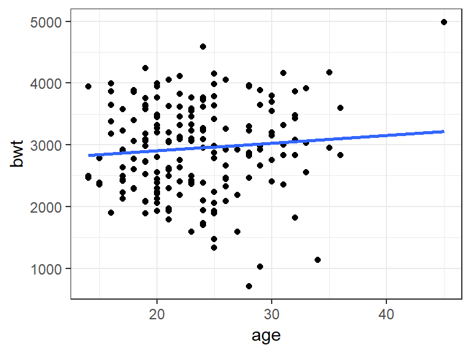 Pasirinkus parametrą se = TRUE bus braižomas tiesės pasikliauties intervalas.
Jei reikalinga tokio tipo kreivė, kuri eina per tašką (0; 0) – \(Y = 0 + bX\),– tada reikia tokio kodogeom_smooth(method = lm, se = FALSE, formula = y ~ 0 + x):
ggplot(birthwt, aes(x = age, y = bwt)) +
geom_smooth(method = lm, se = FALSE, formula = y ~ 0 + x) +
geom_point() +
coord_cartesian(xlim = c(0, 45), ylim = c(0, 5500))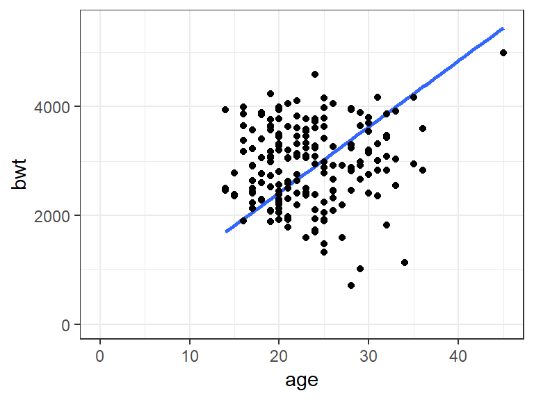 Be abejo, šiuo atveju toks modelis mums nėra tinkamas. Tai tik pavyzdys.
12.1.4 Rezultatų aprašymas: tiesinė regresinė analizė
Standartinių tiesinės regresijos modelio aprašymų pavyzdžių galite rasti regresijos vadovėlio () skyriuje „2.1.8. Standartiniai tiesinės regresijos modelio aprašymai“ 40-41 psl., skyriuje „2.5.6. Išvados“ 114 psl.
Užduotis 12.3
- Atsiverskite nurodytus vadovėlio puslapius ir perskaitykite, kaip turi atrodyti regresinės analizės aprašymas.
- Raštu įvardinkite svarbiausias tiesinės regresijos modelio aprašymo principus.
12.2 Informacijos šaltiniai
Šiame konspekte itin glaustai pateikti tik esminiai regresinės analizės bruožai. Teorinė dalis išdėstyta šiuose vadovėliuose:
- Čekanavičius ir Murauskas „Taikomoji regresinė analizė socialiniuose tyrimuose“ 28-41 ir 127 psl. (išdėstyti praktiniai modelio taikymo aspektai vengiant matematinių detalių) ;
- Čekanavičius ir Murauskas „Taikomoji regresinė analizė socialiniuose tyrimuose“ 100-123 psl. analizės pavyzdys naudojant R;
- Čekanavičius ir Murauskas „Statistika ir jos taikymai II“ 123-147 ir 151-179 psl. (pateikti ir matematiniai modelio aspektai).
Papildomi informacijos šaltiniai, kuriuose mokoma, kaip interpretuoti regresinės analizės rezultatus:
- Straipsnis, kuriame mokoma, kaip interpretuoti keturis pagrindinius tiesinės regresijos modelio diagnostikos grafikus (nuoroda );
- Tinklaraščio straipsnis, kuriame supažindinama, kaip naudojantis R susidaryti tiesinės regresijos modelį ir kaip interpretuoti skaitinius modelio rezultatus (nuoroda );
- Atsakymas diskusijų forume „Cross Validated“, kuriame aiškinama, kaip interpretuoti liekamųjų paklaidų pagal prognozuojamas reikšmes grafiką (nuoroda );
- Atsakymas diskusijų forume „Cross Validated“, kuriame aiškinama, kaip interpretuoti liekamųjų paklaidų pagal įtakos indeksą grafiką (nuoroda ).
12.3 Regresinė analizė naudojant R Commander
Prieš žiūrėdami video epizodus, iš VMA parsisiųskite šioms pratyboms skirtus duomenis (nuoroda ), susikurkite sukonfigūruotą RStudio projektą ir duomenis įsikelkite į šio projekto aplanką.
12.3.1 Paprastoji tiesinė regresija
Epizode su kalibracijos uždaviniu nekorektiškai sudarytas regresijos modelis. Sprendžiant kalibracijos uždavinį korektiška nepriklausomu kintamuoju (X) pasirinkti koncentraciją (tai, ką išmatavome patys), o priklausomu (Y) – optinį tankį (tai, ką išmatavo kalibruojamasis prietaisas). Korektiška modelio lygtis:
\[optinis\_tankis = a + b \times koncentracija\]
Korektiškas kalibracijos uždavinio sprendimas po epizodu.
Užduotis 12.4 Duomenų lentelėje „smoking.xlsx“ (ją parsisiuntėte iš VMA) pateikti skirtingų šalių duomenys apie rūkymą ir plaučių vėžio atvejus. Su šiais duomenimis atkartokite video epizode 12.1 parodytą regresinę analizę: sudarykite prasmingą modelį, užrašykite jo lygtį, patikrinkite, ar modelį korektiška naudoti. Modelį aprašykite. Kintamieji:
- lungca – mirčių nuo plaučių vėžio skaičius milijonui gyventojų;
- cigs – per metus surūkytų cigarečių skaičius, tenkantis vienam gyventojui.
Kalibracijos uždavinio sprendimas
Kalibracijos uždavinio sprendimo pavyzdys. Šiame pavyzdyje modelio prielaidos tikrinamos tik grafiškai.
# Duomenys
kalibracijos_duomenys <- data.frame(
koncentracija = c( 1, 1, 0.75, 0.75, 0.5, 0.5, 0.25, 0.25, 0.125, 0.125, 0.0625, 0.0625),
OD = c(0.98, 0.96, 0.746, 0.751, 0.46, 0.475, 0.23, 0.245, 0.123, 0.126, 0.0615, 0.0626))Modelio sudarymas:
- \(X\) (nepriklausomas kintamasis) turi būti koncentracija (t. y., tai, ką dedame į prietaisą). Darome prielaidą, kad ši koncentracija išmatuota visiškai tiksliai, t.y., be klaidų.
- \(Y\) (priklausomas kintamasis) turi būti optinis tankis ar kitas rodmuo, kurį išmatuoja prietaisas. Prietaisas matuoja su paklaidomis, o modelis į šias paklaidas atsižvelgia.
Sudarome tokios formos lygtį: \(Y = a + bX\), t. y., \(OD = a + b \times koncentracija\).
# Modelio sudarymas:
modelis <- lm(OD ~ koncentracija, data = kalibracijos_duomenys)# Regresijos lygties koeficientai:
modelis
##
## Call:
## lm(formula = OD ~ koncentracija, data = kalibracijos_duomenys)
##
## Coefficients:
## (Intercept) koncentracija
## -0.002598 0.976982# Modelio suvestinė:
summary(modelis)
##
## Call:
## lm(formula = OD ~ koncentracija, data = kalibracijos_duomenys)
##
## Residuals:
## Min 1Q Median 3Q Max
## -0.025893 -0.011081 0.003414 0.005831 0.020862
##
## Coefficients:
## Estimate Std. Error t value Pr(>|t|)
## (Intercept) -0.002598 0.006662 -0.39 0.705
## koncentracija 0.976982 0.011855 82.41 1.69e-15 ***
## ---
## Signif. codes: 0 '***' 0.001 '**' 0.01 '*' 0.05 '.' 0.1 ' ' 1
##
## Residual standard error: 0.01393 on 10 degrees of freedom
## Multiple R-squared: 0.9985, Adjusted R-squared: 0.9984
## F-statistic: 6792 on 1 and 10 DF, p-value: 1.692e-15
Tad gauname \(OD = -0.0026 + 0.9770\times koncentracija\), \(R^2 = 0.999\).
# Prielaidų tikrinimas grafiškai:
op <- par(mfrow = c(2, 2)); plot(modelis); par(op)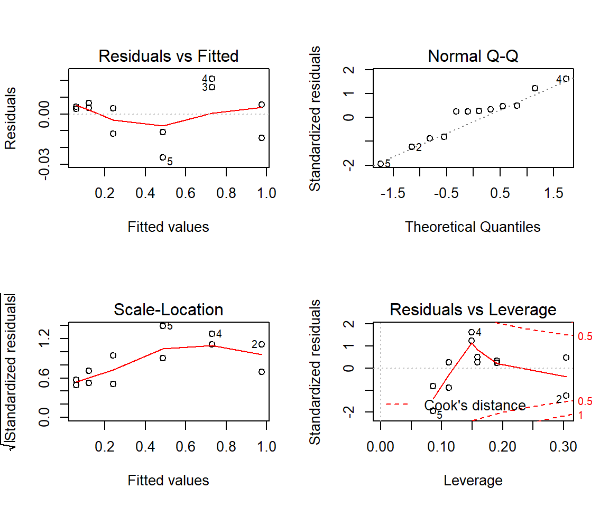
Kalibracijos kreivė su pasikliauties ir prognozės intervalais
# Kalibracinė kreivė:
chemCal::calplot(modelis, xlab = "Koncentracija", ylab = "OD")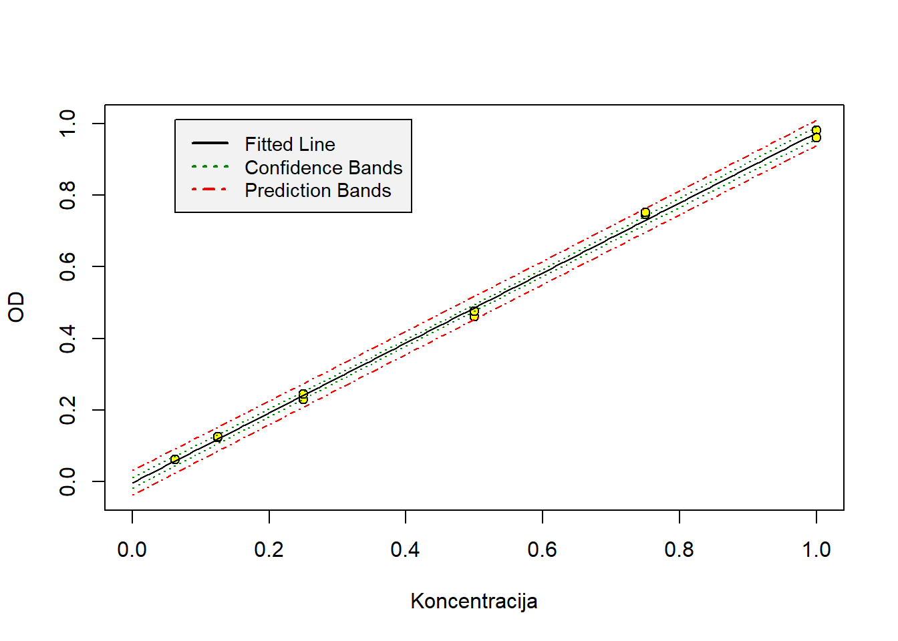
Pagal sudarytą modelį apskaičiuosime koncentraciją (t. y., \(X\)), kai duotas OD (t. y., \(Y\)).
Tam reikia persitvarkyti mūsų modelio lygtį į tokios formos lygtį: \(X = \frac{Y - a}{b}\), t. y., \(koncentracija = \frac{OD - a}{b}\).
naujas_OD <- c(0.701, 0.394, 0.095)
(naujas_OD + 0.0026)/0.9770
## [1] 0.72016377 0.40593654 0.09989765Paketo chemCal funkcija inverse.predict() šiuos skaičiavimus gali atlikti už mus. Ši funkcija papildomai įvertina paklaidas bei ir apskaičiuoja pasikliauties intervalą.
naujas_OD_1 <- 0.701
chemCal::inverse.predict(modelis, naujas_OD_1)
## $Prediction
## [1] 0.720175
##
## $`Standard Error`
## [1] 0.01581414
##
## $Confidence
## [1] 0.04390708
##
## $`Confidence Limits`
## [1] 0.6762680 0.7640821Tad šiuo atveju koncentracija yra 0.720 (95% pasikliauties intervalas 0.676-0.764). Kaip pastebite, šis atsakymas paklaidų ribose sutampa su tuo, kuris video epizode pateikiamas ties 7:30 min. Visgi epizode lygtis sudaryta nekorektiškai.
Daugiau pavyzdžių:
naujas_OD_2 <- 0.394
chemCal::inverse.predict(modelis, naujas_OD_2)
## $Prediction
## [1] 0.4059422
##
## $`Standard Error`
## [1] 0.01514999
##
## $Confidence
## [1] 0.04206312
##
## $`Confidence Limits`
## [1] 0.3638791 0.4480053naujas_OD_3 <- 0.095
chemCal::inverse.predict(modelis, naujas_OD_3)
## $Prediction
## [1] 0.0998978
##
## $`Standard Error`
## [1] 0.01623088
##
## $Confidence
## [1] 0.04506416
##
## $`Confidence Limits`
## [1] 0.05483364 0.14496196Papildomai paketas gali apskaičiuoti mažiausią statistiškai reikšmingai aptinkamą koncentraciją:
chemCal::lod(modelis)
## $koncentracija
## [1] 0.05690188
##
## $OD
## 1
## 0.05299375Ši koncentracija yra apie 0.057, kai optinis tankis yra apie 0.053.
Jei žinome, kad mūsų lygties laisvasis narys yra lygus nuliui (pvz., „nusinulinome“ prietaisą, kad rodytų 0, kai koncentracija yra 0), tada modelyje papildomai įrašome + 0 ir analizę atliekame iš naujo.
# Modelio sudarymas:
modelis_2 <- lm(OD ~ koncentracija + 0, data = kalibracijos_duomenys)
modelis_2
##
## Call:
## lm(formula = OD ~ koncentracija + 0, data = kalibracijos_duomenys)
##
## Coefficients:
## koncentracija
## 0.9733Atsakyme nebėra laisvojo nario („(Intercept)“).
12.3.2 Daugialypė tiesinė regresija
Šiame skyriuje demonstuojamas pavyzdys taip pat aprašomas ir 12.4 skyriuje.
12.3.3 Modelio tobulinimas
Keli paprasti pavyzdžiai, ką daryti, jei netenkinami kai kurie tiesinės regresijos modelio reikalavimai, pateikti video epizode 12.3. Daugiau informacijos apie modelio tobulinimą galite rasti regresijos vadovėlyje (nuoroda pateikta 12.2 skyriuje).
Pastaba: tobulindami modelį vienu metu pašalinkite ne daugiau kaip vieną kintamąjį arba vieną duomenų tašką. Tada sudarykite modelį iš naujo ir atlikite naujojo modelio diagnostiką. To gali pakakti, kad reikalavimai modeliui vėl būtų tenkinami.
Be aiškaus pagrindimo ir argumetacijos duomenų, neatitinkamčių modelio, šalinti negalima!
12.4 Išsamios tiesinės regresinės analizės pavyzdys
Šiame poskyryje pateikiamas išsamios daugialypės tiesinės regresinės analizės pavyzdys.
12.4.1 Klausimas / Problema
Mums reikalingas modelis, kuriuo galime įvertinti medienos tūrio priklausomybę nuo medžio aukščio ir medžio apimties.
12.4.2 Duomenys
Užkraunami duomenys, kuriose užregistruotas medžio aukštis, medžio apimtis ir medienos tūris.
data("trees")?treesSusidarome vaizdą apie duomenis. Pasižiūrime į duomenų struktūrą ir duomenų tipus:
dplyr::glimpse(trees)
## Observations: 31
## Variables: 3
## $ Girth <dbl> 8.3, 8.6, 8.8, 10.5, 10.7, 10.8, 11.0, 11.0, 11.1, 11.2...
## $ Height <dbl> 70, 65, 63, 72, 81, 83, 66, 75, 80, 75, 79, 76, 76, 69,...
## $ Volume <dbl> 10.3, 10.3, 10.2, 16.4, 18.8, 19.7, 15.6, 18.2, 22.6, 1...Visi kintamieji yra skaitiniai (dbl, angl. double).
Pasižiūrime į pirmas ir paskutine eilutes:
head(trees)
## Girth Height Volume
## 1 8.3 70 10.3
## 2 8.6 65 10.3
## 3 8.8 63 10.2
## 4 10.5 72 16.4
## 5 10.7 81 18.8
## 6 10.8 83 19.7tail(trees)
## Girth Height Volume
## 26 17.3 81 55.4
## 27 17.5 82 55.7
## 28 17.9 80 58.3
## 29 18.0 80 51.5
## 30 18.0 80 51.0
## 31 20.6 87 77.0Padarome kintamųjų suvestinę:
summary(trees)
## Girth Height Volume
## Min. : 8.30 Min. :63 Min. :10.20
## 1st Qu.:11.05 1st Qu.:72 1st Qu.:19.40
## Median :12.90 Median :76 Median :24.20
## Mean :13.25 Mean :76 Mean :30.17
## 3rd Qu.:15.25 3rd Qu.:80 3rd Qu.:37.30
## Max. :20.60 Max. :87 Max. :77.00Mūsų modelis galioja tik toms kintamųjų reikšmėms, kurios patenka tarp minimalių ir maksimalių kiekvieno modeliuojamo kintamojo ribų. Tarkim, girth turėtų būti tarp 8.30 ir 20.60. Jei sudarę modelį vėliau turėsime medį, kurio apimtis yra 25, tada jam taikyti modelį bus nekorektiška.
12.4.3 Nusibraižome kintamuosius
Nusibraižome sklaidos diagramų matricą, kurioje visi analizuojami kintamieji viename grafike (susidarome bendrą vaizdą, ar priklausomybė tarp kintamųjų tiesinė):
pairs(trees)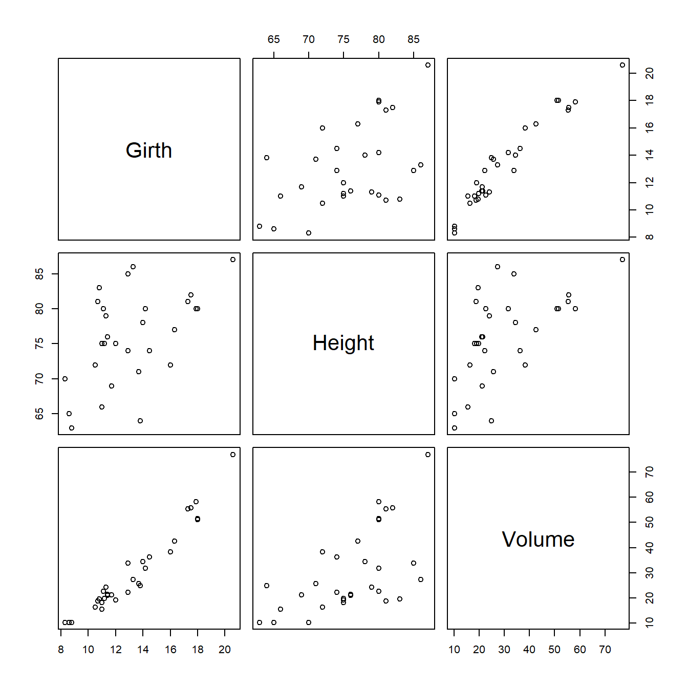
Į kai kurias diagramas pasižiūrime atidžiau – sukuriame atskiras sklaidos diagramas, kuriose priklausomo kintamojo reikšmės y ašyje atidedamos pagal kiekvieną nepriklausomo kintamojo (regresoriaus) reikšmes. Pridedame papildomus grafiko elementus – pakraštines stačiakampes diagramas ir regresijos kreivę,– kurie padeda tiksliau vertinti grafikus:
car::scatterplot(Volume ~ Height, data = trees,
boxplots = 'xy',
smooth = FALSE
)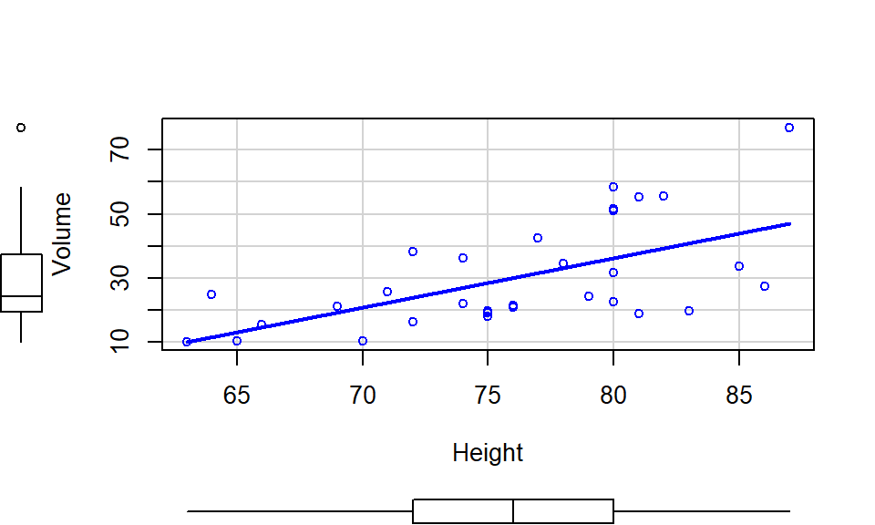
car::scatterplot(Volume ~ Girth, data = trees,
boxplots = 'xy',
smooth = FALSE
)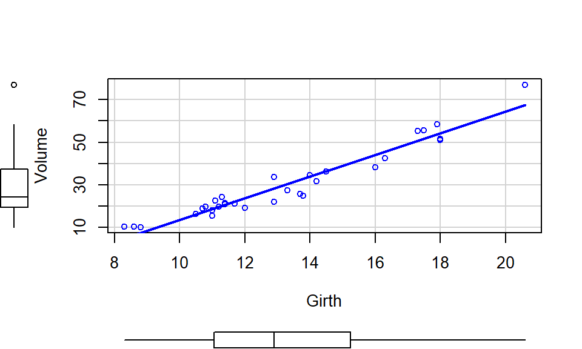
12.4.4 Įvertiname koreliaciją tarp kintamųjų
Nusibraižome koreliacijos koeficientų matricą, kurioje atidėti kiekvienos kintamųjų poros koreliacijos koeficientai bei atlikta koreliacijos patikimumo analizė (pridėta p reikšmių matrica, korektiškiau p reikšmes vertinti pagal koreguotų p reikšmių matricą). Priklausomas kintamasis turėtų bent šiek tiek koreliuoti su kiekvienu iš regresorių, kitaip regresoriaus įtraukimas į modelį labai abejotinas. Tuo tarpu regresoriai tarpusavyje neturėtų per smarkiai koreliuoti, nes kitu atveju galime susidurti su multikolinearumo problema.
RcmdrMisc::rcorr.adjust(trees)12.4.5 Regresijos lygties sudarymas
Modelis sudaromas naudojant funkciją lm() (angl. linear model), jos viduje modeliuojamą sąryšį tarp kintamųjų užrašant R formulės sąsajos pavidalu:
regresijos_modelis <- lm(Volume ~ Girth + Height, data = trees)12.4.6 Modelio suvestinė
Suvestinėje pažiūrime į:
- Determinacijos koeficientą \(R^2\) (standartinį „Multiple R-squared“ arba koreguotąjį „Adjusted R-squared“). Kuo šis rodiklis arčiau 1, tuo modelis tinkamesnis;
- ANOVA testo p reikšmę („p-value“). Jei ANOVA \(p < 0.05\), vadinasi lygtyje yra bent vienas reikalingas regresorius. Jei \(p \ge 0.05\) vadinasi regresoriai ne pakankamai gerai aprašo priklausomą kintamąjį ir regresijos lygtis yra bevertė;
- regresijos koeficientus („Coefficients“ → „Estimate“) ir jiems atlikto t-testo p reikšmes („Coefficients“ → „Pr(>|t|)“). Jei regresoriaus \(p < 0.05\), galima manyti, jog regresorius yra reikalingas. Kitu atveju – regresorius šalintinas iš lygties;
Suvestinė atliekama šitaip:
summary(regresijos_modelis)
##
## Call:
## lm(formula = Volume ~ Girth + Height, data = trees)
##
## Residuals:
## Min 1Q Median 3Q Max
## -6.4065 -2.6493 -0.2876 2.2003 8.4847
##
## Coefficients:
## Estimate Std. Error t value Pr(>|t|)
## (Intercept) -57.9877 8.6382 -6.713 2.75e-07 ***
## Girth 4.7082 0.2643 17.816 < 2e-16 ***
## Height 0.3393 0.1302 2.607 0.0145 *
## ---
## Signif. codes: 0 '***' 0.001 '**' 0.01 '*' 0.05 '.' 0.1 ' ' 1
##
## Residual standard error: 3.882 on 28 degrees of freedom
## Multiple R-squared: 0.948, Adjusted R-squared: 0.9442
## F-statistic: 255 on 2 and 28 DF, p-value: < 2.2e-1612.4.7 Standartizuotieji koeficientai
Apskaičiuojame standartizuotuosius beta koeficientus, pagal kurių absoliučiąją vertę sprendžiame, kurie kintamieji yra įtakingiausi (daro didžiausią įtaką priklausomo kintamojo vertėms):
library(biostat)
coef_standardized(regresijos_modelis)
## Standardized Regression Coefficients:
## Girth Height
## 0.899 0.132Šiuo atveju regresorius „Girth“ yra įtakingesnis už „Height“.
summary(coef_standardized(regresijos_modelis))
## Summary of Standardized Regression Coefficients:
## regressor coeff standardized_coeff influence_rank
## 1 (Intercept) -57.9876589 NA NA
## 2 Girth 4.7081605 0.899 1
## 3 Height 0.3392512 0.132 212.4.8 Liekamųjų paklaidų analizė
Liekamosios modelio paklaidos (įprastai žymimos \(\varepsilon\)) gali būti vadinamos tiesiog paklaidomis arba likučiais (angl. „residuals“). Pagal jas tikrinamos kelios tiesinės regresinės analizės prielaidos.
1. Išskirčių paieška
- Bonferroni išskirčių testas regresinei analizei. Jei išskirčių nėra, testo Bonferroni būdu koreguota \(p\) reikšmė (
Bonferonni p) \(p \ge 0.05\) (arba \(p =\) NA):
outlierTest(regresijos_modelis)
## No Studentized residuals with Bonferonni p < 0.05
## Largest |rstudent|:
## rstudent unadjusted p-value Bonferonni p
## 31 2.765603 0.010122 0.31377- Kuko mato (angl. „Cook’s distance“) įverčiai ir jų grafikai. Kuko mato reikšmės kiekvienam kintamajam turi būti \(< 1\). Jei Kuko mato reikšmė konkrečiam taškui didesnė už vienetą, taškas laikomas išskirtimi.
- Pirmame – liekamųjų paklaidų pagal įtakos indeksą (angl., „Residuals vs. Leverage Plot“) – grafike x ašyje – įtakos indeksas (angl. „leverage“), y ašyje – standartizuotosios paklaidos. Grafiko zonos, kuriose Kuko mato vertė lygi 0.5 bei 1.0, žymimos raudonais punktyrais. Jei taškas nėra išskirtis, jis nepatenka į zoną, kurioje Kuko mato reikšmė didesnė už 1 (šiame grafike šios srities net ir nesimato, pavaizduota tik 0.5 riba):
plot(regresijos_modelis, which = 5)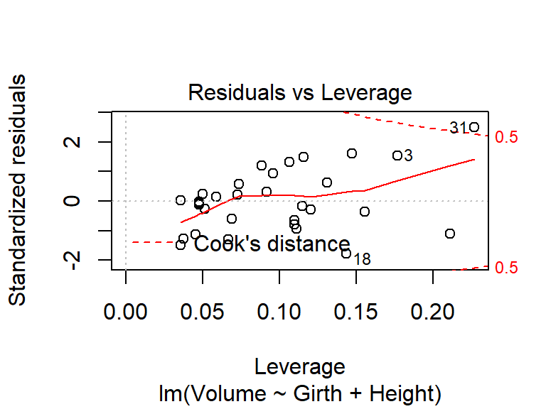
- Antrame (papildomame) – Kuko mato pagal stebėjimo (taško) indeksą – grafike x ašyje atidedamas taško (duomenų eilutės) numeris, o y ašyje – Kuko mato vertė. Taip galime matyti, kurios taškus galima įtarti kaip išskirtis.
plot(regresijos_modelis, which = 4)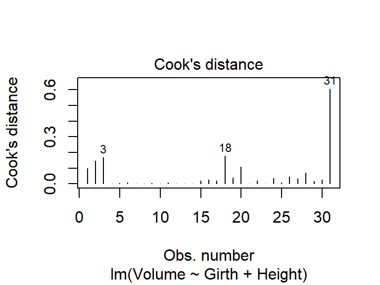
2. Paklaidų normalumo prielaidos tikrinimas
- Kvantilių palyginimo (qq) grafikas standartizuotoms paklaidoms. Jei paklaidos išsidėstyto „ant“ tiesės (arba kuo arčiau jos), prielaida nėra pažeidžiama:
plot(regresijos_modelis, which = 2)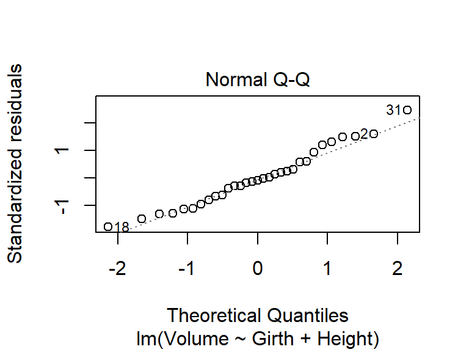
- Shapiro-Wilk kriterijus paklaidų pasiskirstymo normalumui tikrinti. Prielaida nepažeidžiama, jei \(p \ge 0.05\):
shapiro.test(residuals(regresijos_modelis))
##
## Shapiro-Wilk normality test
##
## data: residuals(regresijos_modelis)
## W = 0.97431, p-value = 0.6443. Prielaidos, kad paklaidų vidurkis lygus nuliui, tikrinimas
- Liekamųjų paklaidų pagal prognozuojamas reikšmes grafikas (angl. „Residuals vs. Fitted Plot“). Jei prielaida nepažeidžiama, jame likučiai turi barstytis apie nulį.
plot(regresijos_modelis, which = 1)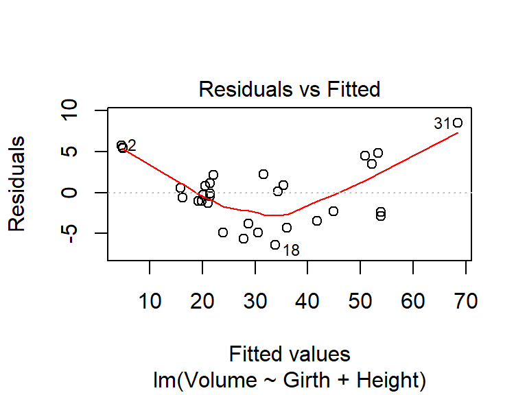
- Stjudento t kriterijus, kuriuo tikrinama hipotezė, kad paklaidų likučių vidurkis lygus nuliui. Prielaida nepažeidžiama, jei \(p \ge 0.05\):
t.test(residuals(regresijos_modelis))
##
## One Sample t-test
##
## data: residuals(regresijos_modelis)
## t = 2.2336e-16, df = 30, p-value = 1
## alternative hypothesis: true mean is not equal to 0
## 95 percent confidence interval:
## -1.375587 1.375587
## sample estimates:
## mean of x
## 1.504453e-16p-value = 1 > 0,05, tad prielaida nepažeidžiama.
4. Homoskedastiškumo prielaidos tikrinimas
Homoskedartiškumo (arba lygių dispersijų prielaida) prielaida – tai prielaida, kad kiekvienai fiksuotai X reikšmei liekamųjų paklaidų dispersijos turėtų būti vienodos. (Terminai „homoskedastiškas“/„heteroskedastiškas“ būdingi regresinei analizei).
- Liekamųjų paklaidų grafikai kiekvienam regresoriui (daliniai įtakos grafikai, angl. „Added-Variable Plots“), kuriuose, esant homoskedastiškumui (lygioms dispersijoms), taškai aplink regresijos tiesę turėtų išsidėstyti tolygiai, tarsi sudarydami juostelę. Jei išsibarstymas platėja, siaurėja ar kitokiu būdu kinta, galima įtarti, kad prielaida pažeidžiama.
# car::avPlots(regresijos_modelis, main = "Liekamųjų paklaidų grafikai")
car::avPlots(regresijos_modelis)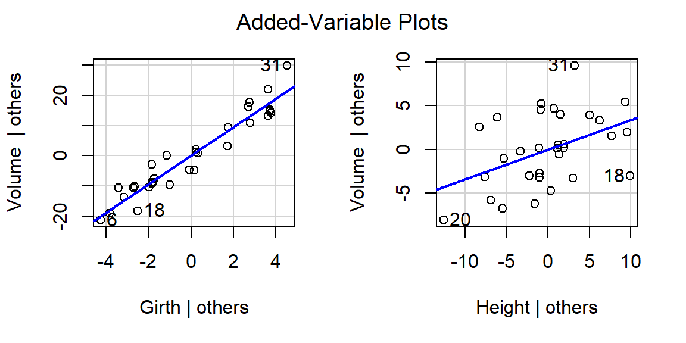
- Kitas grafinio vertinimo būdas – sklaidos-padėties grafikas (angl. „Scale-Location Plot“). Tai vienas iš standartizuotųjų prognozuojamų reikšmių – liekamųjų paklaidų grafiko variantų. Jame likučiai turėtų išsidėstyti tolygiai ir lygiagrečiai x ašiai. Jei matoma tendencija, kad grafiko taškai kyla arba leidžiasi (t. y., nėra lygiagretūs x ašiai) arba jų išsibarstymas siaurėja, platėja arba kitaip kinta, galima numanyti esant heteroskedastiškumą:
plot(regresijos_modelis, which = 3)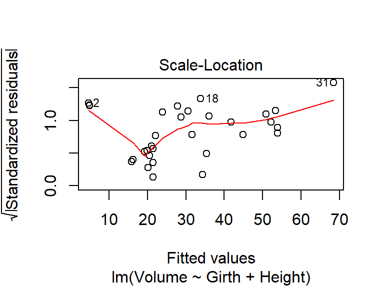
- Breusch-Pagan kriterijus, atliekamas prognozuojamų reikšmių (angl. „fitted values“) atžvilgiu. Stjudentizuota kriterijaus versija (tokią pagal nutylėjimą atlieka žemiau pateikta R funkcija) yra robastiškesnė (labiau atspari nukrypimams). Tikrinamos hipotezės:
- \(H_0\): dispersijos lygios (homoskedastiški duomenys)
- \(H_1\): dispersijos skiriasi (heteroskedastiški duomenys)
- \(H_0\): dispersijos lygios (homoskedastiški duomenys)
Jei kriterijaus \(p \ge 0.05\), tada homoskedastiškumo prielaida tenkinama:
lmtest::bptest(Volume ~ Girth + Height, data = trees,
varformula = ~ fitted.values(regresijos_modelis))
##
## studentized Breusch-Pagan test
##
## data: Volume ~ Girth + Height
## BP = 2.2763, df = 1, p-value = 0.1314Rezultatai rodo, kad skirtumas tarp dispersijų statistiškai nereikšmingas, tad homoskedastiškumo prielaida tenkinama.
12.4.9 Tikrinimas dėl multikolinearumo
Multikolinearumo problemos nėra, kai kiekvienam kintamajam VIF < 4 (VIF – dispersijos mažėjimo daugiklis, angl., „variance inflation factor“):
car::vif(regresijos_modelis)
## Girth Height
## 1.36921 1.3692112.4.10 Prognozavimas
Kai modelis sudarytas ir patikrintas, jį galima naudoti prognozavimui. Šiuo atveju sudarėme modelį, kuriuo pagal medžio apimtį ir aukštį prognozuojamas vidutinis medienos tūris. Prognozuoti galime naudodamiesi funkcija predict.
Pavyzdys, kai prognozė (kiekvienai duomenų eilutei) atliekama naudojant pradinius duomenis:
medienos_turis <- predict(regresijos_modelis, newdata = trees)
medienos_turis
## 1 2 3 4 5 6 7
## 4.837660 4.553852 4.816981 15.874115 19.869008 21.018327 16.192688
## 8 9 10 11 12 13 14
## 19.245949 21.413021 20.187581 22.015402 21.468465 21.468465 20.506154
## 15 16 17 18 19 20 21
## 23.954110 27.852203 31.583966 33.806482 30.600978 28.697035 34.388184
## 22 23 24 25 26 27 28
## 36.008319 35.385260 41.768998 44.877702 50.942868 52.223751 53.428513
## 29 30 31
## 53.899329 53.899329 68.515305Aišku, modelį sudarėme tam, kad galėtume prognozuoti naujas reikšmes. Tam mums reikalingi nauji duomenys, kuriuose būtinai turi būti regresorių pavadinimai (mūsų atveju „Girth“ ir „Height“).
Pavyzdžiai, kai prognozė atliekama naudojant naujus duomenis (nurodomos naujos regresorių, pagal kuriuos buvo modeliuota, reikšmės):
medienos_turis2 <- predict(regresijos_modelis,
newdata = data.frame(Girth = 20, Height = 75))
medienos_turis2
## 1
## 61.61939nauji_duomenys <- data.table::fread(
"Girth Height
11 60
17 60
20 60
20 75"
)
medienos_turis3 <- predict(regresijos_modelis,
newdata = nauji_duomenys)
medienos_turis3
## 1 2 3 4
## 14.15718 42.40614 56.53063 61.61939Prognozuotąsias vertes įdedame į duomenų lentelę šalia regresorių:
nauji_duomenys$`Spėjamas_vidutinis_medienos_tūris` <- medienos_turis3
nauji_duomenys
## Girth Height Spėjamas_vidutinis_medienos_tūris
## 1: 11 60 14.15718
## 2: 17 60 42.40614
## 3: 20 60 56.53063
## 4: 20 75 61.61939Prisiminkite, kad regresijos lygtimi modeliuojamos tik vidutinės priklausomo kintamojo reikšmės.